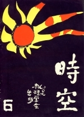

《時空》第六期
目錄
物理學會報告
林棟梁
1
乾像和 Se 的光學物質
陳以南
2
電子七十年
林陳樑
4
馬赫對牛頓力學的評論
鄧克俊
8
質量與能量的關係
朱耀煌
10
物理系常用術語
老牛
11
諸子百家
黃蒼藝
12
觀星隊
官德樣
13
讀書拾遺
黃政哲
15
大學物理的新課程
徐厚興
16
閒談舞和踢踏
草世木
17
四月暑假有得
陳順強
18
論追帽
陳亦宗
19
一個大一學生的自白
松痕
20
日記一則
楊高雄
21
四度空間的幻想
吳嘉林
22
橋
韋行
27
系友來鴻
29
系友通訊
31

出版者：台大物理學會
出版日期：民國五十七年二月二十九日
台大訓導處登記第209號